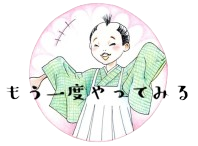

あなたは
『まるで鶏の
せせり（鶏の首肉）の様な人』

せせりとは鶏の首肉のことで、よく動かす首の周りの筋肉です。プリッとした歯ごたえと適度な脂肪分が絶妙なバランスで、食感が楽しめる部分で人気です。あの独特の弾力と程よいジューシーさ、噛むたびに広がる旨味は、クセになる魅力がありますね。その「鶏の首肉のような魅力を持ったあなた」も、クセになる歯応えが満載の人です！
せせりは、弾力ある食べ応えが特徴です。この満足感には、元気を与えてくれるような力強さがあり、食べると「元気が出る！」と感じます。そんな「せせりタイプ」の人は、エネルギッシュで、どんな状況にも直ぐに立ち向かう元気いっぱいの人。仕事でもプライベートでも、活力に満ち溢れていて、まるで「せせり」を食べたときの、あの心地よい弾力感のように、前向きで活発なエネルギーを放っています。
せせりは、その歯ごたえがプリッとしていて、その食感が魅力です。せせりは、他の部位に比べてやや筋肉質で、硬い部分もありますが、それがまた、噛んでいくと美味しく感じるポイントです。噛めば噛むほど旨味が増す、そんな「せせり」のような人は、知れば知るほどハマってしまう歯応えの様な反発力を持ち、噛み締める度に良さが出るタイプ。その魅力は、簡単には諦めない粘り強さです。どんなに難しい状況でも、しっかりと自分の信念を貫いて、最後には結果を出すことができるでしょう。
せせりは脂肪分が適度に含まれていて、ジューシーな柔らかさも感じられる部分です。脂肪が多過ぎないため、ヘルシーです。そんなバランスの良さも魅力的です。
「せせりのような人」は、有名部位ではないから、最初は取っ付きにくいかも知れません。でも、その中には元気とエネルギー、細やかな気配りと粘り強さが詰まっていて、その魅力はどんどん知れ渡って行きます。プリッとした弾力とジューシーな美味しさが、関わる人々に元気を与え、自然に笑顔にしてしまう存在。ちょっとでも接したら、その魅力にハマり、もっと深く知りたくなる！そんな人です。
